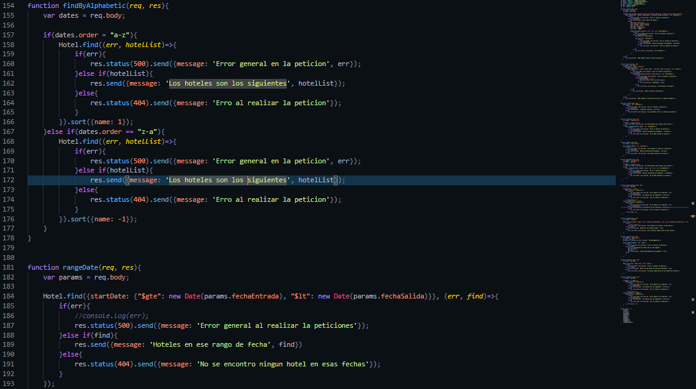
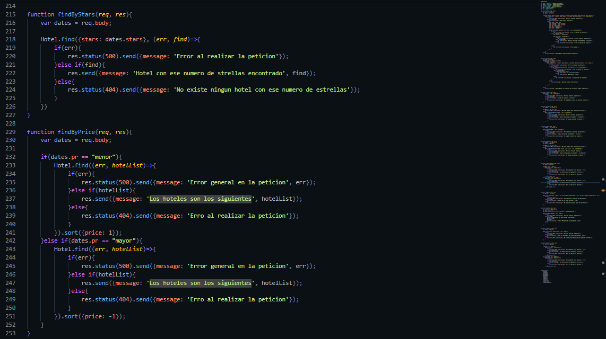
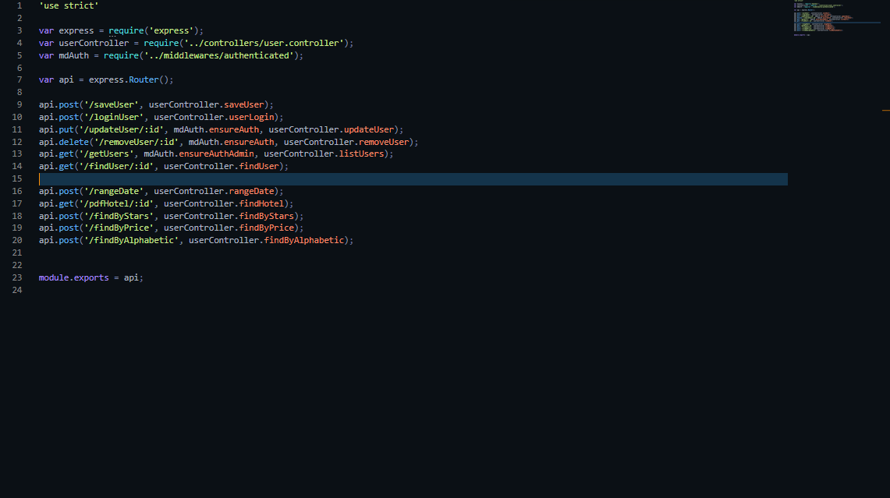

Gestor de Hoteles en Node.js
Fecha de Realizacion: 20/02/2020
Es un sistema que puede ser utilizado por usuarios comunes y usuarios que quieren presentar sus hoteles, al igual que los proyectos anteriores esta hecho con JavaScript, Node.js, MongoDB, Express y dependencias utilizadas en su ultima version como:
- Body-Parser
- jwt-simple
- moment
- bcrypt-nodejs
- pdfkit
El proyecto tiene funciones de registro tanto para usuarios como para hoteles, ya que solo usuarios que cuenten con un "Rol" de administrador podran alterar los datos de los hoteles, los hoteles podran mostrar la calidad de sus servicios mediante estrellas con un rango de 0 a 5 y tambien podran mostrar los horarios con disponibilidad de hospedaje, por otro lado los usuarios podran registrarse e iniciar sesion siempre y cuando se cumplan con los parametros necesarios, este inicio de sesion dejara un token de autenticacion con el que los usuarios podran realizar las acciones permitidas, que son por ejemplo: Alterar los datos de su usuario, buscar Hoteles ya registrados por filtros como su calificacion en estrellas, hoteles ordenados alfabeticamente, por precio de manera ascendete y descendente y por rango de fechas de disponibilidad.
Entre los conocimientos que obtuve al realizar el proyecto fue el uso de variables de tipo "Date" ya que no habia trabajado con esta anteriormente, tambien aprendi a utilizar la propiedad "$regex" que es propia de MongoDB que permite buscar parametros por coincidencia a travez de caracteres especificos, al igual que la propiedad "sort()" que ordena parametros de manera ascendente y descendente, por ultimo implemente una nueva dependencia llamada "pdfkit" que me permitia generar archivos pdf que contenian datos almacenados en la Base de Datos
Para acceder al proyecto ingrese al siguiente link de github Click Aqui
- 
- 
- 